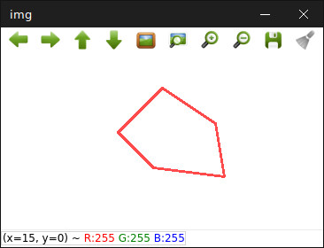

绘画轮廓 / 多边形
绘画多边形我们一般使用drawContours()函数去绘出。不过其实drawContours()是配合findContours()使用的(后章我会说到)，也就是findContours()负责找出轮廓，然后drawContours()绘出。
void drawContours(Mat &image, vector<vector <Point> > contours, int contourIdx, const Scalar &color,] int thickness=1,] int lineType=8,] vector<Vec4i> hierarchy=noArray(),] int maxLevel=INT_MAX,] Point offset=Point())
参数
image —— 目标图像。
contours —— 所有输入轮廓。每个轮廓都存储为点向量。
contourIdx —— 指示要绘制轮廓的索值。如果为负，则绘制所有轮廓。
color —— 轮廓的颜色。
thickness —— 绘制轮廓的线的粗细。如果为负数 (例如，thickness=FILLED)，则绘制轮廓实心。
lineType —— 线路连接。见上章line()
hierarchy —— 有关层次结构的可选信息，轮廓之间的父子辈分关系，一般从findContours计算而出。仅当你只想绘制部分轮廓时才需要（请参见maxLevel）。
maxLevel —— 绘制轮廓的最大水平。如果为0，则仅绘制指定的轮廓。如果为1，该函数将绘制轮廓和所有嵌套轮廓。如果为2，该函数将绘制轮廓，所有嵌套轮廓，所有嵌套到嵌套的轮廓，等等。仅当存在可用的层次结构时，才考虑此参数。
offset —— 可选的轮廓偏移参数。将所有绘制的轮廓移动指定的offset =（dx，dy）。
vector<vector<Point> > contours;
vector<Point> contour = {Point(100, 40),
Point(160, 80),
Point(170, 140),
Point(90, 130),
Point(50, 90)};
contours.push_back(contour);
Mat img(Size(200,200), CV_8UC3, Scalar::all(255));
drawContours(img, contours, -1, Scalar(75,75,255), 2);
imshow("img", img);
waitKey(0);
destroyAllWindows();
